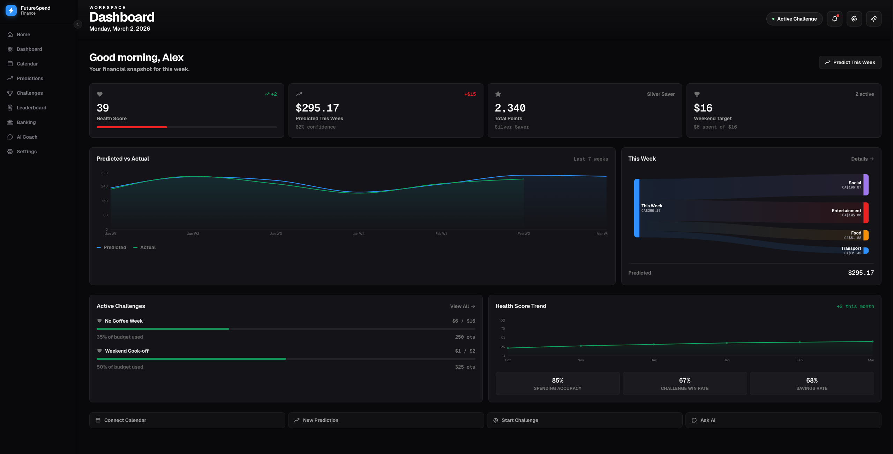

FutureSpend — See Tomorrow, Save Today, Share Success
AI-powered personal finance dashboard that predicts upcoming spending from calendar events and transaction data. Connects your calendar to spending predictions: analyzes upcoming events (meals, outings, transport), predicts likely spend by category, and surfaces insights, savings challenges, and an AI coach. Built with Next.js, TypeScript, Tailwind, and a FastAPI backend deployed on Render.

Problem & Context
Calendar-driven financial awareness is often missing: people see their week’s spend only after it happens. FutureSpend addresses this by turning your calendar into a spending forecast — built in 24 hours at a hackathon sponsored by SFU CSSS and RBC. The system analyzes upcoming events (dining, social, transport, entertainment), predicts likely spend by category using a rules-based pipeline, and surfaces insights and recommended actions (e.g. trim one event to stay under budget). Target users: individuals and teams who want a lightweight, calendar-first view of upcoming expenses.
What It Does
- Calendar-driven pipeline — Mock or real calendar events → parsing → category-based spend prediction → forecast, insights, and challenges
- Dashboard — Health score, 7-day forecast, Sankey diagram by category, spending history, and recommended actions
- Challenges & leaderboard — Join savings challenges, track progress, and compete with friends (mock participants in demo)
- Banking (demo) — Checking balance, vaults, lock/unlock funds; wired for RBC-style APIs in production
- AI coach — Chat with an assistant that uses your dashboard context; powered by Google Gemini when
GEMINI_API_KEYis set - Static export — Frontend builds as a static site for GitHub Pages; no Node server required in production
Tech Stack
Architecture / How It Works
Two-tier setup: Frontend (Next.js 14 with output: 'export' for static GitHub Pages) and Backend (FastAPI + uvicorn on Render). The frontend talks to the backend via NEXT_PUBLIC_API_URL. Calendar events (mock or Google) are parsed into features, run through a prediction pipeline for category-based spend, then feed the dashboard, insights, challenges, and optional Gemini-powered AI coach. Banking and leaderboard endpoints support the demo experience.
Key Takeaways
FutureSpend demonstrates calendar-first personal finance: predicting spend before it happens and making small trade-offs. The modular stack — Next.js static export, FastAPI backend, optional Gemini integration — is built for hackathon speed and can be extended with real calendar and bank APIs. Working with event parsing, category-based prediction, and an AI coach in a single 24-hour build provided hands-on experience in full-stack deployment (Render + GitHub Pages) and user-focused financial UX.